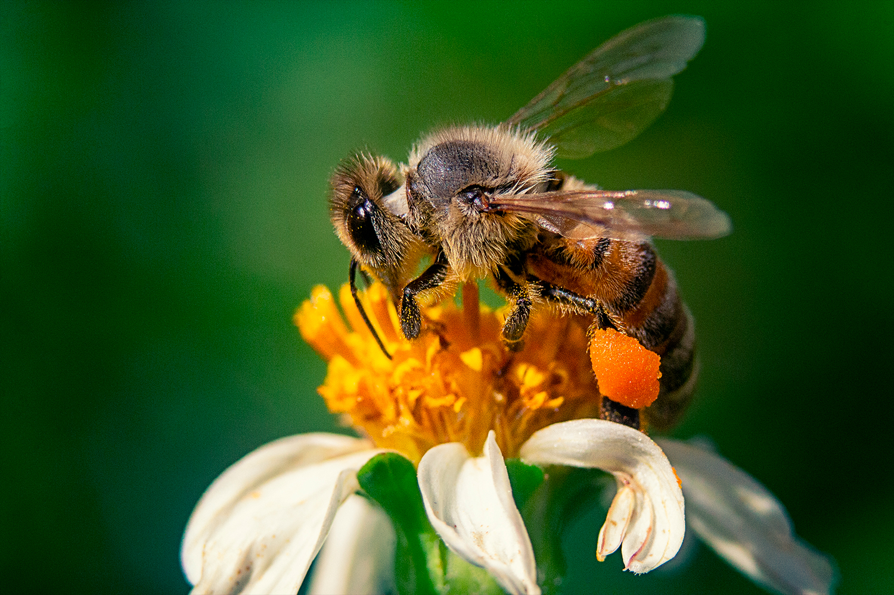
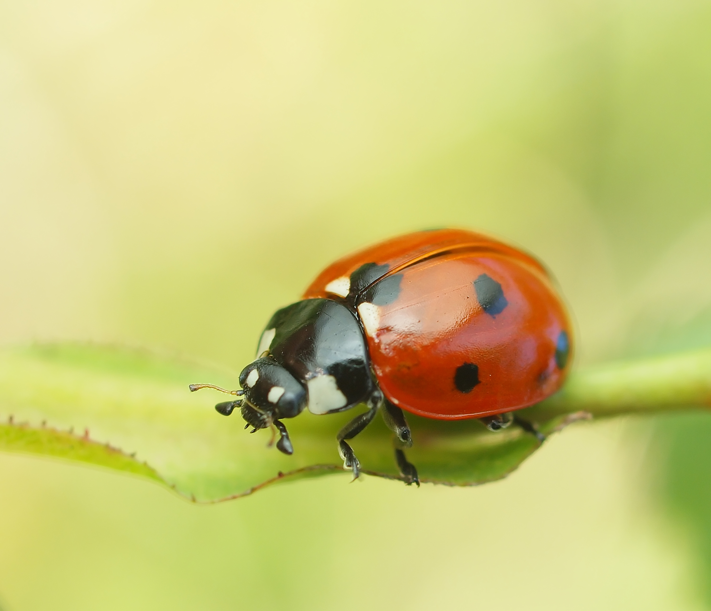

Las abejas son unos insectos extremadamente sociables que viven en colonias que se establecen en forma de enjambres y en los que se organizan en una estricta jerarquía de tres rangos sociales: la abeja reina, los zánganos y las abejas obreras. Habitan en todos los continentes de la Tierra excepto en la Antártida, y se trata de uno de los insectos más antiguos, del que se sabe, puebla nuestro planeta desde hace más de de 30 millones de años. Se conocen más de 20.000 subespecies distintas de abeja divididas en 7 familias reconocidas.
Insectos
-
Insectos
Los insectos son animales invertebrados del filo de los artrópodos. Comprenden el grupo de animales más diverso de la Tierra de los que se conocen aproximadamente un millón de especies diferentes, cada una de ellas con una cantidad de miembros muy abundante. También se cree que aún quedan por describir unos 30 millones de especies más. Pueden encontrarse en casi todos los lugares del planeta, aunque solo un pequeño número de especies ha conseguido adaptarse a la vida en los océanos. Los insectos no solo presentan una gran diversidad, sino que también son increíblemente abundantes. Algunas estimaciones hablan que existen 200 millones de insectos por cada ser humano.
Se caracterizan por tener dos antenas, seis patas y dos alas, a pesar de que en ocasiones no les sirven para volar. Tienen el cuerpo dividido en tres partes: cabeza, tórax y abdomen y en algún momento de su vida, por lo general cuando pasan a la etapa adulta, experimentan un cambio drástico llamado metamorfosis.
-
 Las mariposas son unos insectos pertenecientes al orden de los homometábolos, un grupo
de insectos
superiores, los cuales, a lo largo de su vida sufren una serie de transformaciones
complejas conocida como metamorfosis, y en la que se suceden las fases de embrión,
larva, pupa e imago.
Las mariposas son un tipo de insecto muy popular por los llamativos colores que tiñen
sus alas y por su vuelo vacilante cuando se acerca el buen tiempo. Se han descrito unas
24.000 especies diferentes. Como todos los insectos cuentan con seis patas, dos alas y
un cuerpo dividido en tres partes: cabeza, tórax y abdomen.
Las mariposas son unos insectos pertenecientes al orden de los homometábolos, un grupo
de insectos
superiores, los cuales, a lo largo de su vida sufren una serie de transformaciones
complejas conocida como metamorfosis, y en la que se suceden las fases de embrión,
larva, pupa e imago.
Las mariposas son un tipo de insecto muy popular por los llamativos colores que tiñen
sus alas y por su vuelo vacilante cuando se acerca el buen tiempo. Se han descrito unas
24.000 especies diferentes. Como todos los insectos cuentan con seis patas, dos alas y
un cuerpo dividido en tres partes: cabeza, tórax y abdomen.

Estos insectos son famosos por sus vistosos colores y manchas. Las encontramos en nuestros jardines y algunas veces, en nuestras casas… es la mariquita, también conocida como catarina. Existen alrededor de 5,000 especies de mariquitas registradas. La mariquita tiene un cuerpo redondo de color rojo, amarillo o naranja, dependiendo de la especie puede poseer manchas negras. Estos insectos pertenecen a la familia de los escarabajos y viven en casi todas las partes del mundo. Sus colores brillantes sirven de alerta para sus depredadores naturales, cuando una mariquita o catarina se siente amenazada, exuda un líquido de muy mal olor y sabor que los depredadores como pájaros o arañas recordarán junto con sus brillantes colores.